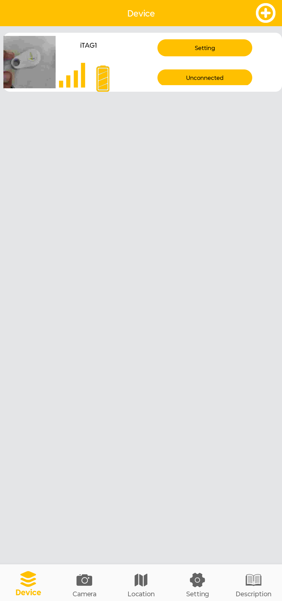
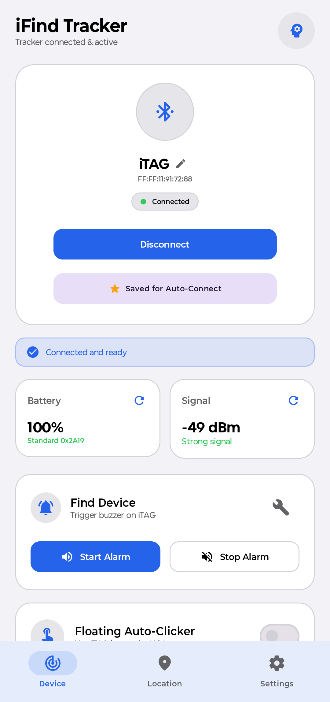

Native companion for your iTAG tracker.
I got an AirTag-style tracker called iTAG, but its companion app (iSearching) was terrible and wasted the hardware's potential, so I built my own native Android companion app, iFind.

App Comparison
The original abandoned companion app compared side-by-side with iFind.

Outdated Android 4-era interface, uncalibrated alerts, frequent background disconnects, no battery indicator, and full of ads.

Modern Material 3 Jetpack Compose UI, live battery percentage, real-time RSSI signal meter, floating clicker, and instant buzzer control.
What Extra Features iFind Has
Unlocking what the iTAG hardware was always capable of doing.
System-Wide Floating Clicker & Reel Scroller
A draggable circular overlay that translates physical iTAG button presses into real screen taps or scroll swipes. Use your tracker as a physical shutter button inside Instagram, TikTok, Snapchat, or your phone's stock camera app.
Reliable "Find My Phone" (Double Click)
Double-clicking the tracker button wakes up a foreground service that rings your phone at maximum volume with continuous looping audio and vibration, even when set to silent. Single-click the tracker to silence.
Live Battery Level & RSSI Signal Meter
Direct GATT battery reading (0x2A19) and real-time RSSI signal strength monitoring with a quality meter so you know when the CR2032 coin cell needs replacement.
Native CameraX Remote Selfie Shutter
Full-resolution in-app camera with physical tracker shutter trigger, 3s and 5s countdown timers with audible beeps, flash controls, and direct Android Gallery storage.
Automatic GPS Disconnect Logging
Automatically records your phone's exact GPS coordinates the moment Bluetooth connection is lost, with a one-tap button to launch turn-by-turn directions in Google Maps.
Hardware Diagnostics & BLE Packet Feed
Built-in developer suite showing raw incoming FFE1 notification packets, delta millisecond timings, GATT characteristic inspection, and button bounce verification.
100% Native, Clean & Private
Written in modern Kotlin and Jetpack Compose. Completely open source, zero advertising SDKs, zero telemetry or tracking, and functions 100% offline.